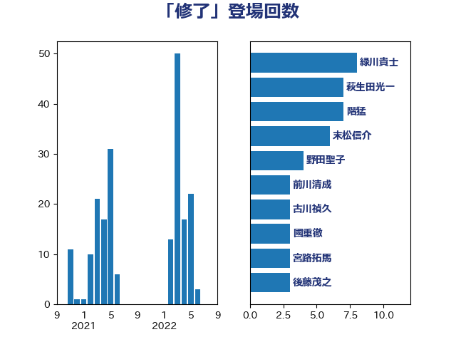

単語「修了」

| 緑川貴士 | 立憲民主党 | 8 回 |
| 萩生田光一 | 自由民主党 | 7 回 |
| 階猛 | 立憲民主党 | 7 回 |
| 末松信介 | 自由民主党 | 6 回 |
| 野田聖子 | 自由民主党 | 4 回 |
| 前川清成 | 日本維新の会 | 3 回 |
| 古川禎久 | 自由民主党 | 3 回 |
| 國重徹 | 公明党 | 3 回 |
| 宮路拓馬 | 自由民主党 | 3 回 |
| 後藤茂之 | 自由民主党 | 3 回 |
| 舩後靖彦 | れいわ新選組 | 3 回 |
| 上野通子 | 自由民主党 | 2 回 |
| 中川宏昌 | 公明党 | 2 回 |
| 坂本哲志 | 自由民主党 | 2 回 |
| 塩川鉄也 | 日本共産党 | 2 回 |
| 大塚耕平 | 国民民主党 | 2 回 |
| 山崎正恭 | 公明党 | 2 回 |
| 岸真紀子 | 立憲民主党 | 2 回 |
| 川田龍平 | 立憲民主党 | 2 回 |
| 打越さく良 | 立憲民主党 | 2 回 |
| 林芳正 | 自由民主党 | 2 回 |
| 柳ヶ瀬裕文 | 日本維新の会 | 2 回 |
| 田村憲久 | 自由民主党 | 2 回 |
| 谷合正明 | 公明党 | 2 回 |
| 長谷川淳二 | 自由民主党 | 2 回 |
| 青山大人 | 立憲民主党 | 2 回 |
| 今井絵理子 | 自由民主党 | 1 回 |
| 伊東信久 | 日本維新の会 | 1 回 |
| 勝部賢志 | 立憲民主党 | 1 回 |
| 大島敦 | 立憲民主党 | 1 回 |
| 守島正 | 日本維新の会 | 1 回 |
| 安江伸夫 | 公明党 | 1 回 |
| 宮本岳志 | 日本共産党 | 1 回 |
| 山本香苗 | 公明党 | 1 回 |
| 山添拓 | 日本共産党 | 1 回 |
| 岬麻紀 | 日本維新の会 | 1 回 |
| 掘井健智 | 日本維新の会 | 1 回 |
| 有村治子 | 自由民主党 | 1 回 |
| 松原仁 | 立憲民主党 | 1 回 |
| 梅村みずほ | 日本維新の会 | 1 回 |
| 梶山弘志 | 自由民主党 | 1 回 |
| 浜口誠 | 国民民主党 | 1 回 |
| 浮島智子 | 公明党 | 1 回 |
| 深澤陽一 | 自由民主党 | 1 回 |
| 田島麻衣子 | 立憲民主党 | 1 回 |
| 畦元将吾 | 自由民主党 | 1 回 |
| 石田真敏 | 自由民主党 | 1 回 |
| 若宮健嗣 | 自由民主党 | 1 回 |
| 西岡秀子 | 国民民主党 | 1 回 |
| 谷田川元 | 立憲民主党 | 1 回 |
| 野間健 | 立憲民主党 | 1 回 |
| 金子恭之 | 自由民主党 | 1 回 |
| 高階恵美子 | 自由民主党 | 1 回 |